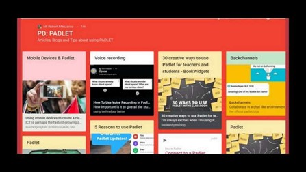
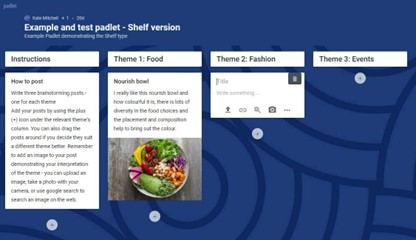
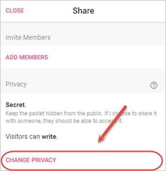
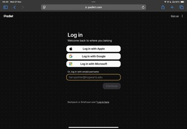
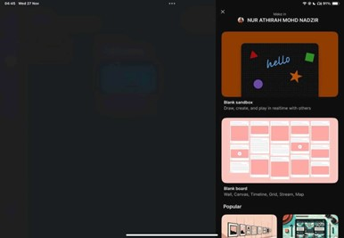
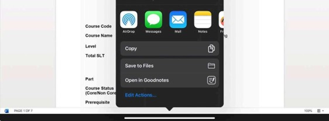

PADLET
WHAT IS A PADLET?
Padlet is a flexible online tool that lets users create interactive boards to share text, images, videos, links, and more. It was introduced in 2013 by Padlet Inc., which was initially known as Wallwisher. While it was originally designed for educational purposes, Padlet has expanded to serve a wide range of users, including individuals and organizations, for activities like brainstorming, collaboration, and content sharing. With its easy-to-use interface and customizable features, Padlet has become a popular choice in schools, businesses, and creative projects worldwide.
FEATURES OF PADLET
Interactive Board
Did you know that Padlet lets you create fun boards where you can share all sorts of cool stuff like text, images, videos, links, and even documents? What's even better is that both teachers and students can work together in real-time, adding and responding to posts! This feature promotes collaboration and enables the creation of engaging, multimedia-rich content that stimulates creative learning.
Customizable Layouts
Padlet offers different layout options to arrange content, including grids, streams, maps, and timelines. Custom layouts help structure content visually, enhancing the clarity and effectiveness of the learning experience. So, teachers can select the layout that best suits their lesson or project, making it easier to organize and present information.
Real-time Collaboration
One of the great things about Padlet is that it allows multiple people to work on the same board at the same time. This feature is perfect for group activities or class discussions, where everyone can add, edit, or comment on posts. Isn't it great how this encourages teamwork, active participation, and quick feedback? It makes group projects and collaborative learning so much easier and more interactive, don't you think?
Privacy and Setting
Padlet lets you control who can see or edit your board with different privacy settings. You can make your board private, set a password, or share it with just a few people. Teachers can also choose whether posts need approval before being shared. Isn't it nice to know that you can keep your content safe and secure, making it perfect for school and learning?
PADLET GUIDANCE

1. First, head to the Padlet website at www.padIet.com and sign up or log in. If you already have an account, just click "Log In" and enter your details. If you want access to more advanced features, you can always choose to purchase one of the paid plans later.

2. Next, click on "Make a Padlet" and pick a template that suits how you want to organize your content from the variety of fun and creative options available. Whether you're looking to create a simple grid layout, a stream of posts, or even a timeline or map, Padlet is ready to be coloured and designed!
3. Click on the "Share" button: On the Padlet creation page, you will find the "Share" button in the top right corner. Here, you can choose who can view and edit your Padlet. You have a few options:
• Private: Only you can access or edit the Padlet.
• Secret: Anyone with the link can view it, but they need the link to access it.
• Password Protected: You can set a password for viewing or editing the Padlet.
• Public: Anyone can view and possibly edit the Padlet, depending on your settings.

4. Padlet allows you to export your board as a PDF, image, or Excel file. This can be useful for sharing a static version of your board, keeping records, or printing it. To save your Padlet for future use or reference, simply click the "Download" option in the settings.
BENEFITS OFPADLET
FOR TEACHERS
1. Instant Feedback and Assessment
Padlet makes it easy for teachers to give immediate feedback on student work whether it is a post, assignment, or contribution. Teachers can leave comments, provide suggestions, and point out mistakes where students can improve. This instant interaction helps students quickly understand what they are doing well and where they need to focus. It also makes it easier for teachers to monitor student progress in real time which enables more effective tracking of their development over time.
2. Encouraging Creativity and Critical Thinking
Padlet offers students the opportunity to express their ideas creatively by using various multimedia tools, such as text, images, videos, and links. Teachers can design activities where students can create and share their own work. This process encourages students to think critically, solve problems, and engage more deeply with the material. By fostering creativity and promoting critical thinking, Padlet helps students gain a more comprehensive understanding of the subject matter.
FOR STUDENTS
1. Easy Access to Resources
Padlet allows students to keep all their study materials in one organized space. Teachers can upload useful resources like notes, videos, and links to the board, making it easy for students to access them whenever they need. Students can also contribute their own resources and ideas, creating a shared area for all course-related content. This feature helps students stay organized and provides them the opportunity to review and revisit materials, improving their ability to retain information.
2. Promotes Peer Learning and Collaboration
Padlet encourages students to work together in real-time. They can share posts, comment on each other's work, and exchange ideas, creating a collaborative environment for learning. This interaction helps students learn from one another, ask questions, and participate in discussions, which deepens their understanding of the material.
PERSONAL REVIEW
As someone who loves cute things, Padlet immediately caught my attention because of its vibrant and visually appealing design. The variety of templates and layouts available are not only functional but also fun and engaging, allowing me to personalise my boards in a way that feels creative and enjoyable. The ability to use different multimedia elements such as images, videos, and links adds to the experience, making it more interactive and visually interesting. For someone like me who enjoys a playful, aesthetically pleasing platform, Padlet offers a perfect balance of both functionality and cuteness, making it a joy to use while staying organized and productive.